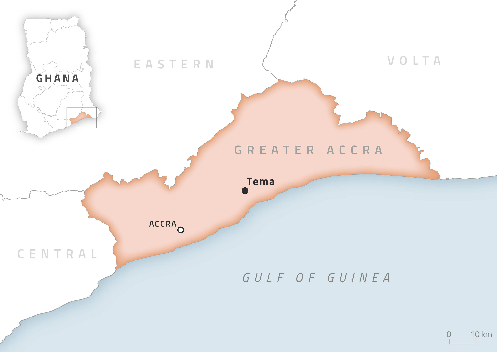

I made this simple locator map of Ghana for Halie Kampman, a postdoctoral scholar in the Penn State Department of Geography. Halie needed a map for a journal article and presentations, but did not have significant requirements for the exact design, and this journal allowed for color maps. Many simple maps for journals use only basic designs, but I wanted to take the time to make the map aesthetically pleasing and stand out, while still being readable. Because a significant amount of my research is on data journalism, I was inspired by news maps. They are readable and accessible to many audiences, while still having a beautiful aesthetic. This project has inspired me to incorporate simple inner glows and drop shadows into more projects, as well as use locator maps in natural rather than boxy shapes.